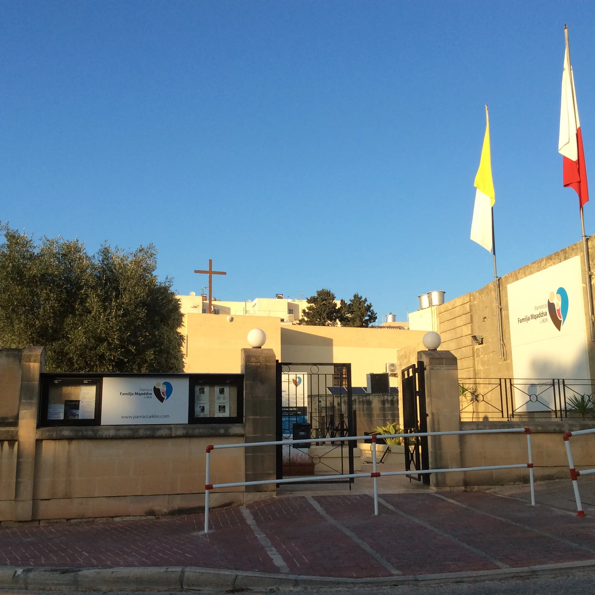

The council records villa building on the Naxxar-facing hill during the 1960s and 1970s. Confirm the exact slope, frontage, stairs, light and access at the property itself.
IKLIN · START WITH THE ADDRESS
A hillside village, read street by street.
Iklin grew from a single mid-century house into several residential layers between Naxxar, Lija, Birkirkara and San Ġwann. Upper Iklin, the parish and civic centre, and the Tal-Balal edge need separate checks.

ONE LOCALITY, THREE READING CONTEXTS
The address is more useful than the label.
The Local Council places Iklin on the hill shared with Naxxar, with Birkirkara and Lija to the south and San Ġwann to the east. Those edges help with orientation; they do not make neighbouring addresses interchangeable or guarantee one housing type, outlook or street condition.
The parish, Pjazza Ninu Cremona and community clinic provide useful orientation. Their presence never proves a listing’s walking route or current service access.
The bypass and busier edges need a viewing-time check. Do not generalise present noise, traffic, air, parking or roadworks across the whole locality.
A modern settlement with older traces.
The Local Council dates Dar il-Lewża, described as Iklin’s first house, to 1954. It records later Upper Iklin villas and broader building from the late 1970s into the 1980s, while also noting Bronze Age and Punic/Roman sites. These facts describe the locality, not the age or archaeology of a listing.
Iklin Local Council ↗Rosemary and St Michael remain part of the story.
The council links the Maltese name l-iklin with rosemary and dates the St Michael Archangel chapel to 1615. Historic references do not establish current entry, events, condition or proximity from a property.
About the locality ↗AUTHORITY- AND OPERATOR-BACKED EXAMPLES
Everyday, food and activity anchors without a “best of” list.
These examples make the guide useful without turning it into a ranking. They are not a complete directory or a promise of live stock, menus, prices, opening hours, appointments, parking, accessibility or distance from a property.
Iklin Community Clinic
Primary HealthCare lists an Iklin community clinic and places the locality in Birkirkara Health Centre’s catchment. Confirm the required service, appointment and timetable directly.
Authority source ↗Two stockist records
HealthAid Malta’s current directory lists Iklin Pharmacy and Mehriez Pharmacy. It is a manufacturer’s stockist list, so it does not prove today’s stock, hours, delivery or a complete local directory.
Operator directory ↗Il Cortile
The operator publishes an Iklin location at 45 Triq Ħal Għargħur. Treat it as one local example and check the current menu, opening, booking and access directly.
Operator source ↗Pjazza Ninu Cremona
Parks in Malta lists a playground, seating and accessible pathways beside the parish church. Current condition and access remain live operational details.
Park source ↗Community groups are examples, not guaranteed programmes.
The Local Council lists the Ħal Lija/L-Iklin Football Youth Nursery and Iklin Scouts Group. That supports their local presence only. Membership, age eligibility, fees, public access and session times should be checked directly and should never be inferred from a property listing.
No overview line becomes a journey.
This edition draws no municipal boundary, generic walking route, road ETA, bus timetable, taxi price or ferry. Walking geometry, bus schedules, current car-traffic estimates and taxi-price observations are separate sources requiring exact endpoints, mode and timestamp. No ferry is assumed for Iklin.
Load the hill, civic centre and Tal-Balal edge only when useful.
The broad frame keeps Iklin’s three contexts legible while showing neighbouring edges only for orientation. It draws no administrative boundary, property route or journey time. OpenStreetMap loads only after your click.
Iklin Local Council · Primary HealthCare community clinics · Primary HealthCare catchments · HealthAid Malta stockists · Il Cortile · Parks in Malta · Iklin sports clubs · Wikimedia Commons image record

No ranking, permanent opening, property-specific route, guaranteed outlook, parking claim, accessibility promise or journey time is claimed. Naxxar, Lija, Birkirkara and San Ġwann remain separate property-search and municipal contexts.